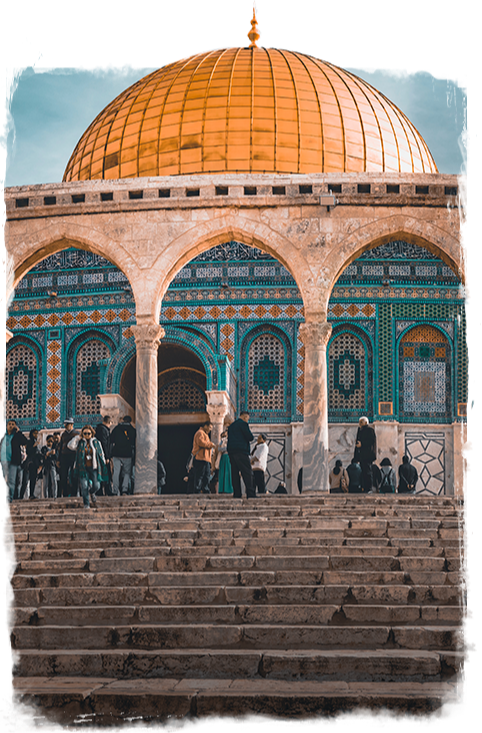
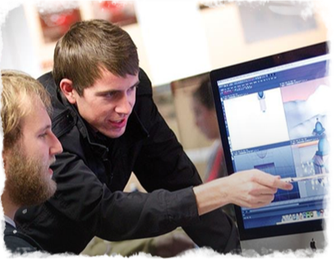
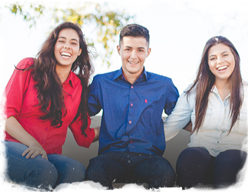

<!DOCTYPE html>
<html lang="en">
<head>
  <meta charset="UTF-8">
  <meta name="viewport" content="width=device-width, initial-scale=1.0">
  <meta http-equiv="X-UA-Compatible" content="ie=edge">
  <title>Программы обучения в Израиле</title>
  <link rel="stylesheet" href="css/style.min.css">
  <link rel="preload" href="./fonts/FiraSans.woff2" as="font" crossorigin="anonymous">
  <link rel="preload" href="./fonts/FiraSans-Bold.woff2" as="font">
  <link rel="preload" href="./fonts/Montserrat-Bold.woff2" as="font">
  <link rel="preload" href="./fonts/Montserrat-Regular.woff2" as="font">
  <link rel="preload" href="./fonts/Raleway-Bold.woff2" as="font">
  <script src="./js/svguse.js" defer></script>
</head>
<body>
  <div class="intro-header-wrapper">
    <header class="page-header">
      <div class="page-header__wrapper">
        <a class="page-header__logo" href="#">
          
        </a>
        <div class="page-header__callback-wrapper">
          <a class="page-header__telephone" href="tel:+ (972) 2 – 621 – 6581">+ (972) 2 – 621 – 6581</a>
          <button class="page-header__callback" type="button">Заказать звонок</button>
        </div>
      </div>
    </header>
    <div class="intro">
      <h1 class="visually-hidden">Программа обучения еврейской молодежи в Израиле Masa</h1>
      <h2>Учёба, путешествие и карьера для еврейской молодёжи</h2>
    </div>
  </div>
  <main>
    <section class="about">
      <h2>О программе</h2>
      <p>«Маса» — совместный проект правительства Израиля и Еврейского агентства Сохнут. Более 250 учебных программ (60 на русском) и возможность стажировки в Израиле.
В течение освоения программ предусмотрен грант от 4200 до 8400$.</p>
      <div class="about__img-wrapper">
        <picture>
          <source media="(max-width: 767px)" srcset="./img/photo_about_mobile@1x.png 1x, ./img/photo_about_mobile@2x.png 2x">
          
        </picture>
      </div>
    </section>
    <section class="programms">
      <h2>Программы</h2>
      <div class="programms__wrapper">
        <ul>
          <li class="programms__item programms__item--general">
            <button class="programms__button programms__button--general">Общие</button>
          </li>
          <li class="programms__item programms__item--study programms__item--active">
            <button class="programms__button programms__button--study">Академические</button>
          </li>
          <li class="programms__item programms__item--work">
            <button class="programms__button programms__button--work">Стажировки</button>
          </li>
          <li class="programms__item programms__item--volunteer">
            <button class="programms__button programms__button--volunteer">Волонтёрство</button>
          </li>
          <li class="programms__item programms__item--religion">
            <button class="programms__button programms__button--religion">Религиозные</button>
          </li>
        </ul>
        <div class="programms__about programms__about--general">
          <h3>Общие</h3>
          <p>
            Провести семестр или год за рубежом, знакомясь с различными культурами
 и идеями, традициями и стилем жизни — вот что такое учеба за границей! Израиль — это не только центр религиозного мира, это  также академический центр, живая лаборатория идей и творческого исследования.
          </p>
          <p>
            Может быть, Вы заинтересованы в изучении социологии, мира, юриспруденции, биологии, сравнительной религии, законодательного
 и делового администрирования или искусства? Здесь, в Израиле, Вы сможете
            изучить все это в удивительной университетской среде.
          </p>
        </div>
        <div class="programms__about programms__about--active programms__about--study">
          <h3>Академические</h3>
          <p>
            Провести семестр или год за рубежом, знакомясь с различными культурами
 и идеями, традициями и стилем жизни — вот что такое учеба за границей! Израиль — это не только центр религиозного мира, это  также академический центр, живая лаборатория идей и творческого исследования.
          </p>
          <p>
            Может быть, Вы заинтересованы в изучении социологии, мира, юриспруденции, биологии, сравнительной религии, законодательного
 и делового администрирования или искусства? Здесь, в Израиле, Вы сможете
            изучить все это в удивительной университетской среде.
          </p>
        </div>
        <div class="programms__about programms__about--work">
          <h3>Стажировки</h3>
          <p>
            Провести семестр или год за рубежом, знакомясь с различными культурами
 и идеями, традициями и стилем жизни — вот что такое учеба за границей! Израиль — это не только центр религиозного мира, это  также академический центр, живая лаборатория идей и творческого исследования.
          </p>
          <p>
            Может быть, Вы заинтересованы в изучении социологии, мира, юриспруденции, биологии, сравнительной религии, законодательного
 и делового администрирования или искусства? Здесь, в Израиле, Вы сможете
            изучить все это в удивительной университетской среде.
          </p>
        </div>
        <div class="programms__about programms__about--volunteer">
          <h3>Волонтёрство</h3>
          <p>
            Провести семестр или год за рубежом, знакомясь с различными культурами
 и идеями, традициями и стилем жизни — вот что такое учеба за границей! Израиль — это не только центр религиозного мира, это  также академический центр, живая лаборатория идей и творческого исследования.
          </p>
          <p>
            Может быть, Вы заинтересованы в изучении социологии, мира, юриспруденции, биологии, сравнительной религии, законодательного
 и делового администрирования или искусства? Здесь, в Израиле, Вы сможете
            изучить все это в удивительной университетской среде.
          </p>
        </div>
        <div class="programms__about programms__about--religion">
          <h3>Религиозные</h3>
          <p>
            Провести семестр или год за рубежом, знакомясь с различными культурами
 и идеями, традициями и стилем жизни — вот что такое учеба за границей! Израиль — это не только центр религиозного мира, это  также академический центр, живая лаборатория идей и творческого исследования.
          </p>
          <p>
            Может быть, Вы заинтересованы в изучении социологии, мира, юриспруденции, биологии, сравнительной религии, законодательного
 и делового администрирования или искусства? Здесь, в Израиле, Вы сможете
            изучить все это в удивительной университетской среде.
          </p>
        </div>
      </div>
    </section>
    <section class="want-go">
      <h2>Хочу поехать!</h2>
      <p>Оставьте свой телефон и мы свяжемся с вами, подберём куратора и ответим на все вопросы!</p>
      <form>
        <div class="want-go__form-wrapper">
          <input type="tel" placeholder="телефон">
          <button class="btn" type="submit">Перезвоните мне</button>
        </div>
      </form>
    </section>
    <section class="how-go">
      <div class="how-go__wrapper">
        <h2>Как поехать</h2>
        <p class="how-go__about">
          Чтобы узнать подробнее о программе, свяжитесь с координатором в вашем городе. Вы получите актуальные сведения о доступных программах и городах, в которых можете пройти программу.
        </p>
        <b>
          Чтобы иметь возможность получить грант на обучение 
от 4200 до 8400$, вы должны:
        </b>
        <ul>
          <li>
            <p class="how-go__condition">
              Быть в возрасте от 16 до 30 лет
            </p>
          </li>
          <li>
            <p class="how-go__condition">
              Иметь оконченное среднее образование
            </p>
          </li>
          <li>
            <p class="how-go__condition">
              Иметь документально подтверждённые еврейские корни
 и пройти консульскую проверку
            </p>
          </li>
          <li>
            <p class="how-go__condition">
              За последние 2 года быть не больше 3х месяцев
              подряд непрерывно в Израиле.
            </p>
          </li>
        </ul>
        <p class="how-go__budget">
          Если вы не подходите по этим правилам, вы всё равно можете
          принять участие в программе «Маса», оплатив её полную стоимость.
        </p>
      </div>
    </section>
    <section class="live-israel">
      <h2>Жизнь в израиле</h2>
      <p class="live-israel__about">Помимо учёбы, в рамках программы у вас будет возможность путешествовать по стране и познакомиться с богатой культурно-исторической жизнью Израиля и его жителей.</p>
      <ul class="live-israel__list">
        <li class="live-israel__first-photo">
          
          <p>Экскурсии по Израилю
 и знакомство с его историей</p>
        </li>
        <div class="live-israel__photo-wrapper">
          <li class="live-israel__second-photo">
            
            <p>Изучение иврита</p>
          </li>
          <li class="live-israel__third-photo">
            
            <p>Обучение современным навыкам и профессиям</p>
          </li>
          <li class="live-israel__fourth-photo">
            
            <p>Совместные творческие проекты с израильской молодёжью</p>
          </li>
          <li class="live-israel__fifth-photo">
          
          <p>Развитие лидерства</p>
        </li>
        </div>
      </ul>
      <ul class="live-israel__indicators">
        <li class="live-israel__indicator live-israel__indicator--active live-israel__indicator--first">
          <span>Первое фото</span>
        </li>
        <li class="live-israel__indicator live-israel__indicator--second">
          <span>Второе фото</span>
        </li>
        <li class="live-israel__indicator live-israel__indicator--third">
          <span>Третье фото</span>
        </li>
        <li class="live-israel__indicator live-israel__indicator--fourth">
          <span>Четвертое фото</span>
        </li>
        <li class="live-israel__indicator live-israel__indicator--fifth">
          <span>Пятое фото</span>
        </li>
      </ul>
    </section>
    <section class="masa-photo">
      <div class="masa-photo__wrapper">
        <h2>#masaisrael</h2>
        <p>Познакомьтесь с программой от первого лица! Многие участники ведут блоги и фотодневники
 о жизни, учёбе и путешествиях в Израиле.</p>
        <a class="masa-photo__watch-btn btn" href="#">
          смотреть фото
          <svg class="masa-photo__icon-insta" width="24" height="24">
            <use xlink:href="./img/sprite_auto.svg#icon-instagram"></use>
          </svg>
        </a>
      </div>
    </section>
    <section class="faq">
      <h2>Частые вопросы</h2>
      <ul>
        <li class="faq__question faq__question--first">
          <h3>Кто организатор? Какие сроки у программы?</h3>
          <p>Полная стоимость определяется организаторами в зависимости от направления. В большинстве случаев грант «Маса» не покрывает полную стоимость программы, и поэтому предусматривается определённая доля личного участия.</p>
        </li>
        <li class="faq__question faq__question--second">
          <h3>Что такое грант на обучение?</h3>
          <p>Полная стоимость определяется организаторами в зависимости от направления. В большинстве случаев грант «Маса» не покрывает полную стоимость программы, и поэтому предусматривается определённая доля личного участия.</p>
        </li>
        <li class="faq__question faq__question--third faq__question--active">
          <h3>Как определяется стоимость программы?</h3>
          <p>Полная стоимость определяется организаторами в зависимости от направления. В большинстве случаев грант «Маса» не покрывает полную стоимость программы, и поэтому предусматривается определённая доля личного участия.</p>
        </li>
        <li class="faq__question faq__question--fourth">
          <h3>Что такое грант на обучение?</h3>
          <p>Полная стоимость определяется организаторами в зависимости от направления. В большинстве случаев грант «Маса» не покрывает полную стоимость программы, и поэтому предусматривается определённая доля личного участия.</p>
        </li>
        <li class="faq__question faq__question--fifth">
          <h3>Признаётся ли учеба в рамках проекта для дальнейшего обучения?</h3>
          <p>Полная стоимость определяется организаторами в зависимости от направления. В большинстве случаев грант «Маса» не покрывает полную стоимость программы, и поэтому предусматривается определённая доля личного участия.</p>
        </li>
        <li class="faq__question faq__question--sixth">
          <h3>Как выглдядит полный процесс регистрации
 на программу «Маса»?</h3>
          <p>Полная стоимость определяется организаторами в зависимости от направления. В большинстве случаев грант «Маса» не покрывает полную стоимость программы, и поэтому предусматривается определённая доля личного участия.</p>
        </li>
      </ul>
    </section>


    <div class="modal-position">
      <section class="modal-order-callback">
        <h2 class="visually-hidden">Форма заказа обратного звонка</h2>
        <p class="modal-order-callback__title">Заказать звонок</p>
        <p class="modal-order-callback__message">Оставьте ваши контактные данные, мы свяжемся
 с вами в течение рабочего дня и обязательно поможем найти ответ на ваш вопрос!</p>
        <form autocomplete="off" class="modal-order-callback__form">
          <input type="text" name="name" placeholder="имя" required>
          <input type="tel" name="telephone" placeholder="телефон" required>
          <input class="btn" type="submit" value="Перезвоните мне">
          <label>
            <input class="modal-order-callback__checkbox" type="checkbox" name="agree" required>
            <span class="modal-order-callback__custom-checkbox"></span>
            Нажимая на кнопку, вы даёте согласие на обработку персональных данных
          </label>
        </form>
        <button class="modal-order-callback__close-button"></button>
      </section>


      <section class="modal-success">
        <span></span>
        <h2 class="modal-success__title">Заявка принята</h2>
        <p class="modal-success__message">Мы приняли ваши данные и вскоре мы перезвоним вам для уточнения деталей!</p>
        <button class="btn" type="button">понятно</button>
        <button class="modal-order-callback__close-button"></button>
      </section>
    </div>


    <script src="./js/script.js"></script>
  </main>
</body>
</html>
